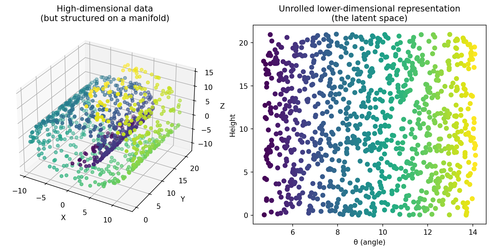
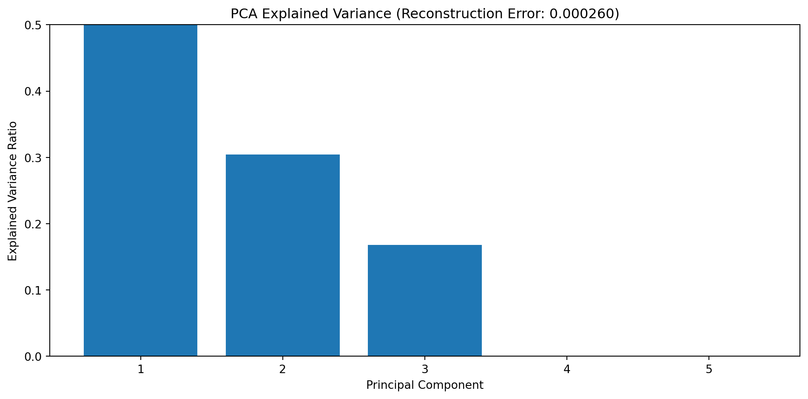
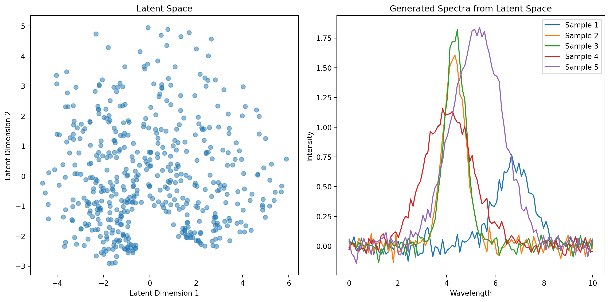

class ExcavationBrush(nn.Module):
def __init__(self, spectral_channels=1000, artifact_dimensions=32):
super().__init__()
self.compressor = nn.Sequential(
nn.Linear(spectral_channels, 512),
nn.ReLU(),
nn.BatchNorm1d(512),
nn.Dropout(0.2),
nn.Linear(512, 256),
nn.ReLU(),
nn.BatchNorm1d(256),
nn.Linear(256, artifact_dimensions)
)
def forward(self, buried_spectrum):
return self.compressor(buried_spectrum)Autoencoders as Digital Archaeologists for Spectroscopic Data
An archaeological journey through molecular and material landscapes
machine-learning
teaching
Introduction
Picture this: An archaeologist stands at a dig site, surrounded by layers of earth that haven’t seen sunlight since dinosaurs were a hot new trend. With painstaking care, they brush away dirt and sediment, revealing pottery shards, and that one graduate student who fell asleep on the job.
Now imagine replacing dirt with noise, shards with molecular signatures, and the reconstructed vase with a clean spectrum. Welcome to the world of spectroscopic data analysis using autoencoders: where we excavate molecular treasures from layers of noise and complexity through what the fancy folks call “unsupervised representation learning” (which is “teaching computers to find patterns without telling them what patterns to find”).
Every spectroscopic measurement is like an archaeological dig, except instead of finding ancient coins, we’re finding molecular transitions between energy states.
But just as ancient artifacts come to us covered in dirt and damaged by time (and occasionally by that one archaeologist who thought dynamite was a good excavation tool), our spectroscopic data arrives buried under multiple layers of contamination: such as
- noise due to random fluctuations (“electrons having a dance party”)
- environmental interference: for example, Water vapor and CO₂ absorption bands
- instrumental artifacts: baseline drift (“detector getting tired”)
- physical degradation: sample fluorescence and aging effects
Traditional smoothing techniques are the equivalent of using a bulldozer to dust off a delicate vase. Sure, you’ll remove the dirt, but you might also remove, well, everything else. One usecase of autoencoder is to do this in a better way.
The Digital Archaeologist’s Toolkit
In our metaphor, an autoencoder is like a three-phase archaeological expedition.
Phase 1: The Excavation (Encoding)

The first phase in our archeology mission begins by cleaning the artifacts we find: removing the sand, cleaning them. We can think of it as removing the unnecessary. Similarly, our spectroscopic application starts with removing the unnecessary and “compressing” the spectrum to its essentials.
In the simplest form this can be done using a sequence of linear layers:
The encoder takes our high-dimensional spectrum and compresses it into something more manageable. But this isn’t a simple compression algorithm: the model learns which features matter most, like an experienced archaeologist who can tell the difference between “priceless artifact” and “rock that looks vaguely interesting.”
Phase 2: The latent space

The latent space is our archaeological museum’s storage room—not the fancy public galleries with mood lighting and gift shops, but the back room where things actually get done. Here, each spectrum becomes a neat little index card with just the essential information.
# In our latent space, each spectrum becomes coordinates on an ancient map
# It's like Google Maps, but for molecules
def encode_spectrum(encoder, noisy_spectrum):
latent_artifacts = encoder(noisy_spectrum) # Returns a point in hyperspace
return latent_artifactsBut this is no ordinary storage room. It’s a magical space where similar artifacts naturally cluster together, like teenagers at a high school cafeteria. Polymers hang out in their valley, ceramics claim the mountain peaks, and metal oxides spread across their plains like they own the place.
The Math Behind Clustering
The clustering emerges from what we call the manifold hypothesis—the idea that high-dimensional data actually lives on a lower-dimensional surface.
Mathematically, our encoder learns a mapping: \[ f_\phi: \mathcal{X} \rightarrow \mathcal{Z} \] Where \(\mathcal{X} \subset \mathbb{R}^n\) is where our data lives (the messy real world) and \(\mathcal{Z} \subset \mathbb{R}^m\) is our nice, clean latent space. This mapping preserves important properties:
Distance preservation: Similar inputs map to nearby points \[ d_{\mathcal{Z}}(f_\phi(x_i), f_\phi(x_j)) \approx d_{\mathcal{X}}(x_i, x_j) \] Continuity: Small changes in input create small changes in output
\[ \|f_\phi(x_1) - f_\phi(x_2)\| \leq L\|x_1 - x_2\| \]
(The Lipschitz condition.)
So materials with similar spectra end up as neighbors in latent space, forming these natural clusters. It’s like chemical social networking!
Phase 3: Bringing it back together (Reconstruction)

Using only our compressed representation (those index cards), we attempt to reconstruct the original spectrum. It’s like trying to rebuild a dinosaur from a few bones and a lot of imagination, except our imagination is constrained by mathematics.
class Reconstructor(nn.Module):
def __init__(self, artifact_dimensions=32, spectral_channels=1000):
super().__init__()
self.reconstruction_process = nn.Sequential(
nn.Linear(artifact_dimensions, 256),
nn.ReLU(),
nn.BatchNorm1d(256),
nn.Linear(256, 512),
nn.ReLU(),
nn.BatchNorm1d(512),
nn.Linear(512, spectral_channels),
nn.Sigmoid()
)
def forward(self, artifact_description):
return self.reconstruction_process(artifact_description)The decoder takes our compressed representation and attempts to rebuild the original spectrum. If we’ve done our job right (and haven’t accidentally trained our network to just output pictures of cats), the reconstruction should be faithful to the original.
The Mathematics of Archaeological Documentation
Just as physical conservation laws govern the preservation of matter and energy (thanks, Emmy Noether!), information theory dictates how we can compress and reconstruct data without turning it into digital gibberish.
The fundamental equation governing our autoencoder is the reconstruction loss:
\[ \mathcal{L}_{\text{reconstruction}} = \|x - \hat{x}\|^2 \]
Where \((x)\) is our original spectrum (the truth, the whole truth, and nothing but the truth) and \((\hat{x})\) is our reconstruction.
Why MSE Makes Statistical Sense
Let me tell you a tale about why MSE and Gaussian noise are BFFs.
If we assume our noise is Gaussian with mean 0 and variance \(\sigma^2\):
\[ p(x|z) = \mathcal{N}(x; f_\theta(z), \sigma^2I) \]
The likelihood for a single data point becomes: \[ p(x|z) = \frac{1}{(2\pi\sigma^2)^{n/2}} \exp\left(-\frac{\|x - f_\theta(z)\|^2}{2\sigma^2}\right) \]
Taking the negative log-likelihood:
\[ -\log p(x|z) = \frac{n}{2}\log(2\pi\sigma^2) + \frac{\|x - f_\theta(z)\|^2}{2\sigma^2} \]
Since the first term is constant w.r.t. θ (our parameters), minimizing negative log-likelihood is equivalent to minimizing:
\[ \frac{\|x - f_\theta(z)\|^2}{2\sigma^2} \]
Which is just MSE in a fancy hat! So when you use MSE loss, you’re implicitly assuming Gaussian noise.
But we can be fancier with a composite loss function:
\[ \mathcal{L}_{\text{total}} = \underbrace{\|x - \hat{x}\|^2}_{\text{Be accurate}} + \lambda_1 \underbrace{\|\nabla x - \nabla \hat{x}\|^2}_{\text{Be smooth}} + \lambda_2 \underbrace{\sum_{p \in \text{peaks}} |x_p - \hat{x_p}|}_{\text{Don't mess up the peaks}} + \lambda_3 \underbrace{\mathcal{R}(\phi, \theta)}_{\text{Don't go crazy}} \]
Each term has a job:
- Fidelity term: “Make it look like the original”
- Gradient penalty: “Keep it smooth, no sudden jumps”
- Feature preservation: “Those peaks are important, don’t lose them!”
- Regularization: “Stay humble, don’t overfit”
The Manifold Hypothesis: Why This Archaeological Dig Makes Sense At All
Let’s address a fundamental question: why should this even work? Shouldn’t compressing our beautiful high-dimensional spectrum lose valuable information? Welcome to the manifold hypothesis, the reason dimensionality reduction isn’t just mathematical vandalism.
The manifold hypothesis suggests that high-dimensional data (like our spectroscopic signals) aren’t actually using all those dimensions effectively. Instead, the data lies on or near a lower-dimensional surface (a manifold) embedded in that high-dimensional space. It’s like discovering that what looks like a complex 3D sculpture is actually just a cleverly folded 2D sheet of paper.
Why spectroscopic data probably lives on a manifold
Spectroscopic data is fundamentally constrained by:
- Physics: Certain combinations of absorption bands are physically impossible due to quantum mechanical selection rules. You can’t just have arbitrary patterns of peaks!
- Chemistry: Molecular structures create specific patterns of vibrations, rotations, and electronic transitions. A carbonyl group will always give you that telltale peak around 1700 cm⁻¹ in IR spectroscopy. And the space of possible chemicals is constrained (you cannot combine all atoms in all possible ways)
- Instrumental limitations: Your spectrometer has a specific resolution and response function, further constraining the space of possible measurements.
These constraints mean that despite having thousands of wavelength points, your spectrum is likely determined by a much smaller number of underlying variables—chemical compositions, molecular structures, temperature, etc.
Mathematically, if your spectral data points \(\{x_1, x_2, \dots, x_n\} \in \mathbb{R}^d\) (where d might be thousands of wavelengths), they likely lie on or near a \(k\)-dimensional manifold \(\mathcal{M} \subset \mathbb{R}^d\) where \(k\ll d\).
The goal of our autoencoder is to learn this manifold—the archaeological site map, if you will.
To visualize this, imagine our spectra are actually faces of ancient masks (stay with me here). Each mask has thousands of pixels (dimensions), but you could describe any mask with far fewer parameters: eye size, mouth width, nose shape, etc. That’s your manifold! Autoencoders discover these “facial features” of spectra automatically. ![You might be familiar with eigenfaces, which are “basis vectors” of human faces one can derive with PCA.]

From Classical to Neural: The Connection Between PCA and Linear Autoencoders
Long before neural networks were cool, archaeologists (well, statisticians) had their own dimensionality reduction technique: Principal Component Analysis, or PCA.
The Mathematical Connection Between PCA and Linear Autoencoders
Let’s consider a linear autoencoder with:
- Input dimension \(d\)
- Latent dimension \(k\) (where \(k < d\))
- Encoder weight matrix \(W_1 \in \mathbb{R}^{k \times d}\)
- Decoder weight matrix \(W_2 \in \mathbb{R}^{d \times k}\)
- No biases or activation functions
For an input \(x \in \mathbb{R}^d\), the encoding and reconstruction process is:
- Encode: \(z = W_1 x\) (where \(z \in \mathbb{R}^k\))
- Decode: \(\hat{x} = W_2 z = W_2W_1x\)
The reconstruction error we minimize is: \[ \mathcal{L} = \|x - \hat{x}\|^2 = \|x - W_2W_1x\|^2 \]
Under the constraint that \(W_1\) and \(W_2\) minimize this reconstruction error, the optimal solution has the following properties:
- \(W_2 = W_1^T\) (the decoder is the transpose of the encoder)
- The rows of \(W_1\) are the first k principal components of the data
To see why, let’s decompose our data matrix \(X\) using SVD: \[ X = U\Sigma V^T \]
Where:
- \(U\) contains the left singular vectors
- \(\Sigma\) contains the singular values on its diagonal
- \(V^T\) contains the right singular vectors
The optimal linear projection to \(k\) dimensions is given by:
\[ W_1 = U_k^T \]
Where \(U_k\) contains the first \(k\) columns of \(U\) (corresponding to the \(k\) largest singular values).
And the optimal reconstruction matrix is: \[ W_2 = U_k \]
Which is exactly \(W_1^T\).
Therefore, our reconstructed data is: \[ \hat{X} = W_2W_1X = U_kU_k^TX \]
Which is precisely the reconstruction you’d get from projecting X onto the first k principal components and back.
This means our linear autoencoder will learn the same subspace as PCA, just with more computational effort and the possibility of getting stuck in local minima. It’s like taking a road trip to your neighbor’s house—you’ll get there, but was the scenic route necessary?
A Practical Example: Finding the Redundant Dimension
Let’s make this concrete with an example. Imagine we have a spectrum where two neighboring wavelengths always vary together—perhaps due to a broad absorption band or some instrumental correlation.
# Create a dataset with a redundant dimension
def create_redundant_spectrum(num_samples=1000):
# Independent features
independent_features = np.random.randn(num_samples, 3)
# Create a 5D spectrum where dimensions 2 and 3 are correlated
spectra = np.zeros((num_samples, 5))
spectra[:, 0] = independent_features[:, 0] # Independent
spectra[:, 1] = independent_features[:, 1] # Independent
spectra[:, 2] = independent_features[:, 2] # Independent
spectra[:, 3] = 0.95 * independent_features[:, 2] + 0.05 * np.random.randn(num_samples) # Correlated with dim 2
spectra[:, 4] = independent_features[:, 0] - independent_features[:, 1] # Another linear combination
return spectra
# Create a linear autoencoder
class LinearAutoencoder(nn.Module):
def __init__(self, input_dim=5, latent_dim=3):
super().__init__()
self.encoder = nn.Linear(input_dim, latent_dim, bias=False) # No bias
self.decoder = nn.Linear(latent_dim, input_dim, bias=False) # No bias
def forward(self, x):
latent = self.encoder(x)
return self.decoder(latent)
def tie_weights(self):
# This enforces W_2 = W_1^T
self.decoder.weight.data = self.encoder.weight.data.t()When we train this model, it should learn to identify dimension 3 as redundant (since it’s nearly identical to dimension 2). Also dimension 4 is only a linear combination of other dimensions. A 3-dimensional latent space will capture all the variance in the 5-dimensional input.
Code
# Generate redundant spectrum
spectra = create_redundant_spectrum()
# Apply PCA
pca = PCA(n_components=5) # Get all components to see variance
spectra_reduced = pca.fit_transform(spectra)
pca_three = PCA(n_components=3)
spectra_reduced_three = pca_three.fit_transform(spectra)
spectra_reconstructed = pca_three.inverse_transform(spectra_reduced_three)
# Calculate reconstruction error
reconstruction_error = np.mean((spectra - spectra_reconstructed) ** 2)
# Plot the explained variance
plt.figure(figsize=(10, 5))
plt.bar(range(1, 6), pca.explained_variance_ratio_)
plt.xlabel("Principal Component")
plt.ylabel("Explained Variance Ratio")
plt.title(f"PCA Explained Variance (Reconstruction Error: {reconstruction_error:.6f})")
plt.xticks(range(1, 6))
plt.ylim(0, 0.5)
plt.tight_layout()
plt.show()

In the real world, spectroscopic data often has many such redundancies. Neighboring wavelengths are correlated, certain patterns of peaks occur together, and baseline effects introduce further correlations. These redundancies are exactly what autoencoders exploit—the manifold structure of our data.
The difference is that nonlinear autoencoders can capture more complex manifolds that PCA misses. It’s like upgrading from a 2D map to a 3D hologram of your archaeological site.
Beyond Linear Maps: Where Neural Networks Actually Shine
Now we’ve seen that linear autoencoders are just PCA in disguise, let’s talk about why we still bother with neural networks.
The magic happens when we add nonlinearities: those lovely activation functions like ReLU, sigmoid, or tanh. These allow autoencoders to learn complex, curved manifolds that PCA could never dream of capturing.
class NonlinearArchaeologist(nn.Module):
def __init__(self, input_dim=1000, latent_dim=32):
super().__init__()
# Now with extra nonlinear goodness!
self.encoder = nn.Sequential(
nn.Linear(input_dim, 512),
nn.ReLU(), # This is where the magic happens
nn.Linear(512, 256),
nn.ReLU(), # More magic!
nn.Linear(256, latent_dim)
)
self.decoder = nn.Sequential(
nn.Linear(latent_dim, 256),
nn.ReLU(),
nn.Linear(256, 512),
nn.ReLU(),
nn.Linear(512, input_dim)
)
The Power of Nonlinearity
Consider a simple nonlinear manifold: data points lying on a curved surface, like a swiss roll or a spiral. Linear methods like PCA can only find a flat subspace that minimizes the average distance to all points.
But with nonlinear transformations, we can “unroll” or “straighten” the manifold.
For autoencoders, this means:
- The encoder can learn a function \(f: \mathbb{R}^d \to \mathbb{R}^m\) that maps the curved manifold to a flat latent space
- The decoder learns the inverse mapping \(g: \mathbb{R}^m \to \mathbb{R}^d\) to bring it back
The nonlinear functions effectively learn to “straighten” the manifold in latent space, making it more amenable to analysis and visualization.
It’s like being able to translate an ancient text written on a curved vase simply by “unwrapping” it digitally!
The Nonlinear Archaeologist’s Advantage
Imagine two archaeological sites with similar artifacts. A traditional archaeologist might classify them identically based on simple metrics. But our advanced neural archaeologist notices subtle nonlinear patterns.
Similarly, nonlinear autoencoders can distinguish between spectral patterns that would be indistinguishable to linear methods. They can capture:
- Peak shifting - When peaks move slightly based on local environment
- Multiplicative interactions - When components don’t just add linearly
- Complex baselines - When background signals have complicated, nonlinear forms
This is why, despite the elegance and interpretability of PCA, we still train these complex nonlinear beasts for real spectroscopic data. The archaeology of molecules is rarely a linear affair!
The Probabilistic Excavation: Variational Autoencoders
What if our archaeologist isn’t completely certain about what they’ve found? Enter the Variational Autoencoder (VAE)—the probabilistic archaeologist who deals in uncertainties rather than absolutes.
class ProbabilisticArchaeologist(nn.Module):
def __init__(self, input_dim=1000, latent_dim=32):
super().__init__()
# Encoder produces distribution parameters
self.encoder_base = nn.Sequential(
nn.Linear(input_dim, 512),
nn.ReLU(),
nn.Linear(512, 256),
nn.ReLU()
)
# Two outputs: mean and log-variance
self.fc_mu = nn.Linear(256, latent_dim)
self.fc_logvar = nn.Linear(256, latent_dim)
# Decoder reconstructs from samples
self.decoder = nn.Sequential(
nn.Linear(latent_dim, 256),
nn.ReLU(),
nn.Linear(256, 512),
nn.ReLU(),
nn.Linear(512, input_dim)
)
def encode(self, x):
h = self.encoder_base(x)
mu = self.fc_mu(h) # "I think the artifact is here"
logvar = self.fc_logvar(h) # "But I could be wrong by this much"
return mu, logvar
def reparameterize(self, mu, logvar):
# The famous reparameterization trick
std = torch.exp(0.5 * logvar)
eps = torch.randn_like(std)
return mu + eps * std
def forward(self, x):
mu, logvar = self.encode(x)
z = self.reparameterize(mu, logvar)
return self.decoder(z), mu, logvarManifold Cartography: The KL Divergence as Map-Making
Here’s where the VAE truly shines: it doesn’t just learn the manifold, it learns a probabilistic manifold with a well-behaved coordinate system. The VAE loss function has two terms:
\[ \mathcal{L}_{\text{VAE}} = \underbrace{\mathbb{E}_{q_\phi(z|x)}[\log p_\theta(x|z)]}_{\text{Reconstruction: Make it look right}} - \underbrace{D_{\text{KL}}(q_\phi(z|x) \| p(z))}_{\text{KL divergence: Keep it reasonable}} \]
The first part is our familiar reconstruction loss - “make the reconstruction look like the input.”
The second part is the Kullback-Leibler divergence, which measures how much our learned distribution \(q_\phi(z|x)\) differs from a prior distribution \(p(z)\) (typically a standard normal distribution).
Why the KL Term Matters for the Manifold
The KL divergence term in VAEs serves multiple crucial purposes that make it perfect for learning manifolds:
It creates a continuous latent space: By encouraging overlap between the distributions of similar data points, the KL term ensures that nearby points in input space map to overlapping regions in latent space. This creates a smooth manifold where interpolation makes sense.
It regularizes the coordinate system: Without the KL term, the autoencoder could learn any arbitrary mapping that preserves information. The KL term acts like a cartographer imposing a standard coordinate system on a newly discovered land.
It enables generative sampling: By forcing the aggregate posterior to match the prior distribution, we can sample from the prior and generate new data points that lie on the learned manifold - essentially “discovering” new artifacts that could plausibly exist.
It prevents overfitting: The KL term acts as a complexity penalty that prevents the model from learning an overly complex mapping that might not generalize well.
When applied to spectroscopic data, this is particularly powerful because:
- We can generate new realistic spectra by sampling from the latent space
- We can perform meaningful interpolation between spectra
- We can quantify uncertainty in our representations
def vae_loss(reconstruction, x, mu, logvar, beta=1.0):
"""Calculate the VAE loss with reconstruction and KL terms"""
# Reconstruction loss (how well does the output match the input?)
recon_loss = F.mse_loss(reconstruction, x, reduction='sum')
# KL divergence (how much does our distribution differ from the prior?)
# For the standard normal prior, this has a nice closed form
kl_loss = -0.5 * torch.sum(1 + logvar - mu.pow(2) - logvar.exp())
# Total loss with β weighting
return recon_loss + beta * kl_lossBy adjusting the β parameter, we can control the trade-off between reconstruction quality and the “niceness” of our latent space. Higher β values force the latent space to be more like a standard normal distribution, while lower values prioritize reconstruction accuracy.
This gives us a powerful tool for exploring the manifold of spectroscopic data - not just finding it, but mapping it in a way that makes it useful for generation, interpolation, and understanding the underlying physical parameters.
Conclusion: The Journey Continues
Our archaeological expedition through the world of autoencoders has revealed powerful tools for uncovering the hidden structure in spectroscopic data. We’ve seen how:
- Linear autoencoders connect to classical methods like PCA
- Nonlinear autoencoders can capture complex manifold structures
- Variational autoencoders add a probabilistic perspective that enables generation and interpolation
Just as archaeologists piece together ancient civilizations from fragments, we can piece together the underlying molecular and material properties from noisy, complex spectral data.
And just like archaeology, the field continues to evolve with new techniques and approaches. From graph neural networks to attention mechanisms to diffusion models, the tools for spectroscopic data analysis keep getting more sophisticated - allowing us to uncover ever more subtle patterns and relationships in our molecular artifacts.
So grab your digital trowel and start digging!

You can find a short lecture on this on YouTube.